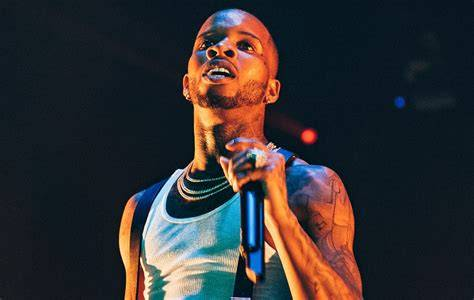

About Tory Lanez
Tory Lanez (born Daystar Peterson in 1992) is a Canadian rapper, singer, and songwriter. Known for blending R&B, hip-hop, and rap into his unique sound, he rose to fame with hits like "Say It" and "Luv". He's released several successful albums and mixtapes and is known for both his smooth vocals and sharp rap skills.
Music

Alone at Prom (2021)
- Enchanted Waterfall
- Lady of Namek
- Ballad of a Badman

DAYSTAR (2020)
- Money Over Fallouts
- Sorry But I Had To...
- Friends Become Strangers
Listen on Spotify
Gallery
